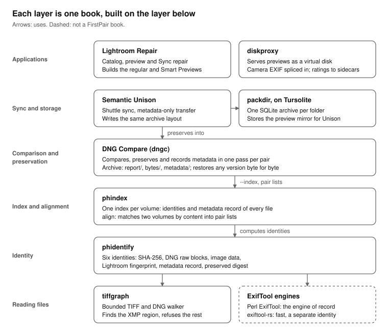

Read the diagram from the bottom.
Reading files. tiffgraph walks the structure of a TIFF or DNG file under a fixed grammar. It finds the one region an editor may rewrite, the XMP packet, and refuses any file outside its grammar with a reason. Beside it sit the ExifTool engines: Perl ExifTool, the engine of record, and exiftool-rs, a faster reimplementation whose records are a separate identity and are never mixed with Perl’s.
Identity. phidentify computes seven identities of a file. Whole-file SHA-256 answers “is it the same file?”; DNG raw blocks and image data answer “is it the same photograph?”; block marks, a sampled fingerprint of every large block in the file, answer “is it an edited copy of that file?”; the Lightroom fingerprint answers “is it the original my catalog recorded?”; the metadata record says what an editor changed; and the preserved digest proves that only the XMP packet differs. It also builds a file’s skeleton: the few kilobytes a metadata edit rewrites, with a map of the large blocks it leaves alone, from which the file as it was can be rebuilt out of its edited copy.
Index and alignment. phindex keeps those
identities for every file of a volume in one SQLite index, cheap to
rerun. phindex align accounts for one volume in another by
identity, so moved, renamed and re-dated copies are found, and writes
pair lists of what matched and how. It keeps a skeleton of every file
too, and the earlier contents of a path, so phindex restore
brings back a file as it was before an editor wrote into it.
Comparison and preservation. DNG Compare takes
those pairs, or a whole tree, and through one command,
dngc, compares each pair, preserves the source as a
verified delta against its counterpart, and records metadata differences
in a searchable index. Its archive rebuilds any source file byte for
byte, and keeps doing so after the counterparts are edited, moved or
renamed.
Sync and storage. Semantic Unison synchronizes photo trees, sending a metadata edit without resending image bytes, keeps the versions it replaces as skeletons of a few kilobytes each, and preserves what a shuttle disk brings into the same kind of archive. packdir keeps directories of many small files, such as a preview cache, as SQLite archives that still work like plain files. Both store their databases through Tursolite, one interface over SQLite and Turso.
Applications. Lightroom Repair repairs Lightroom Classic catalogs, previews and Sync without forging their state. diskproxy serves a folder as a virtual disk, so previews can be browsed and rated with the originals offline, with camera metadata spliced in and ratings captured into sidecars.